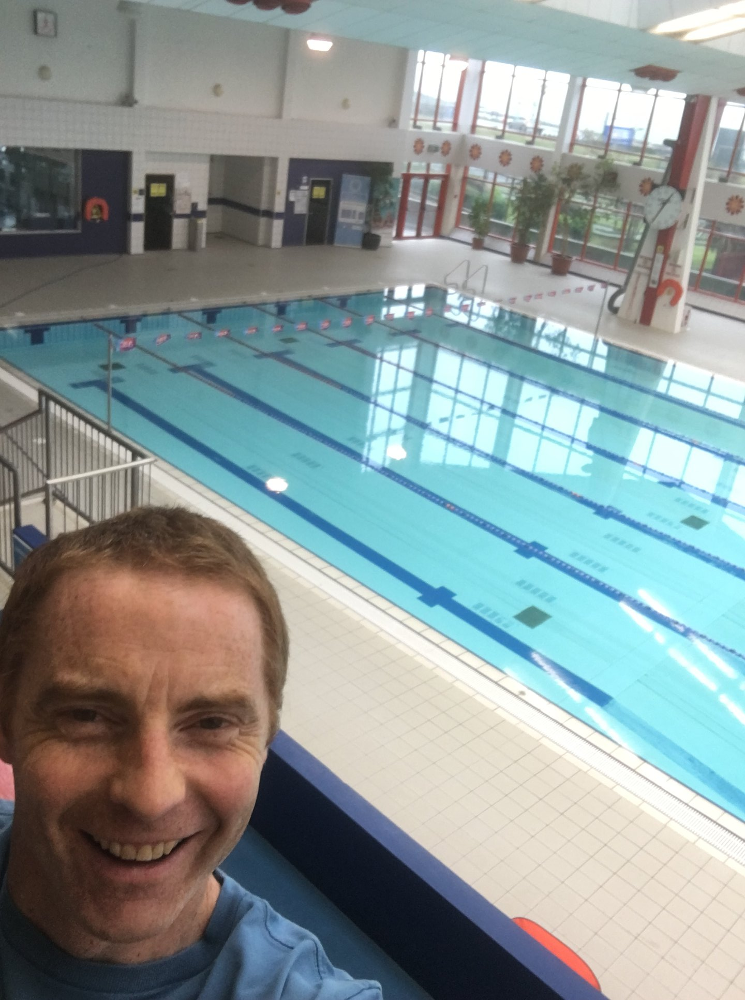
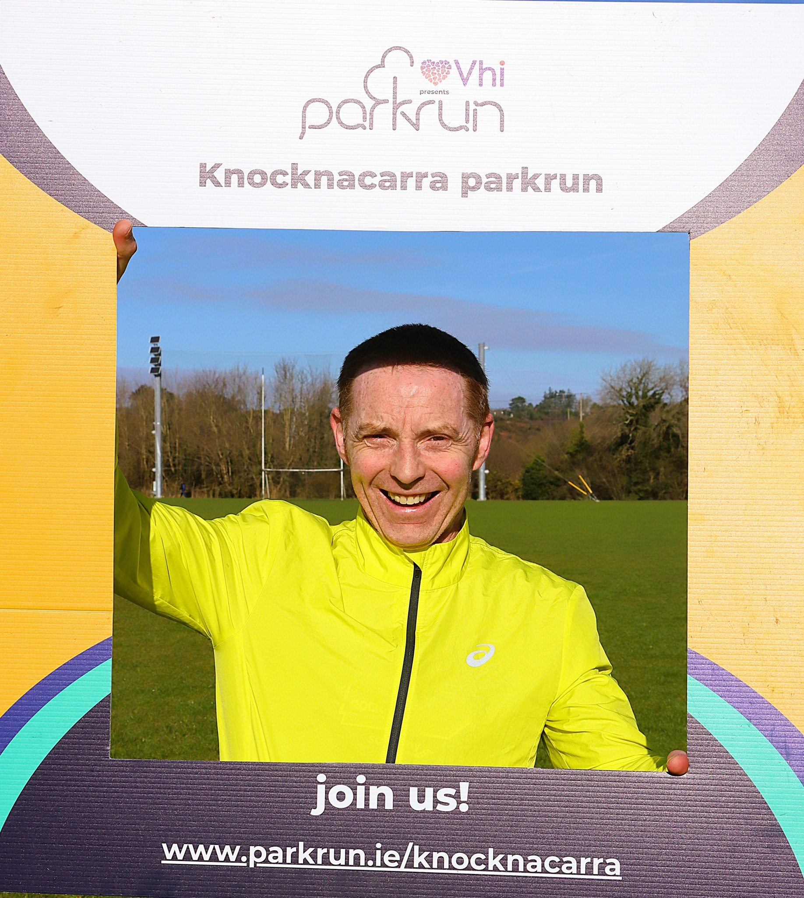
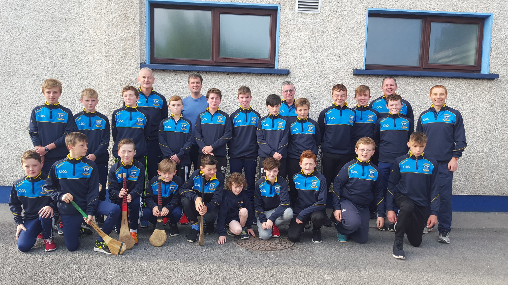
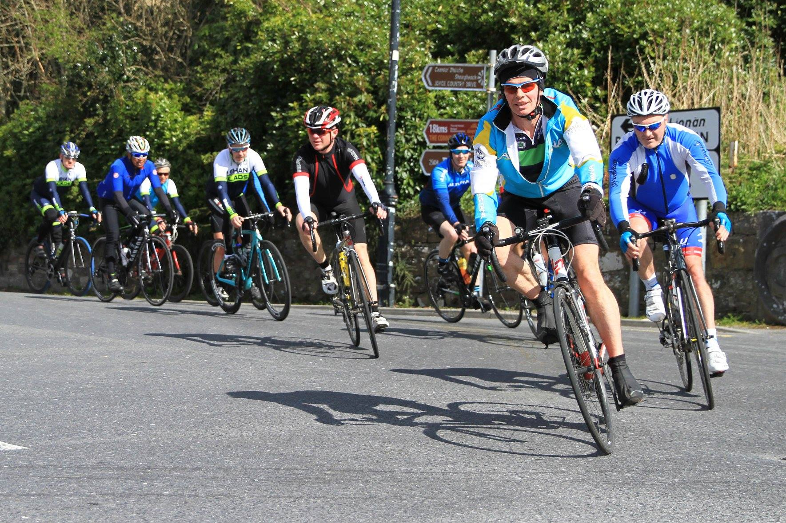
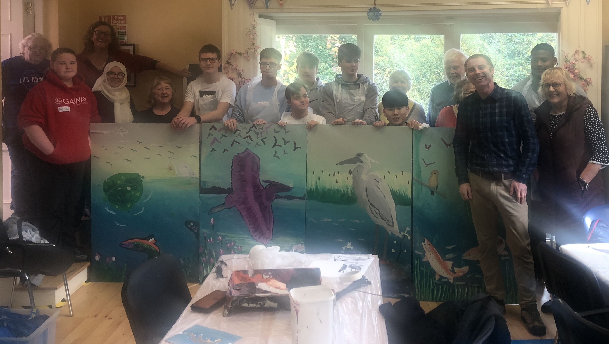
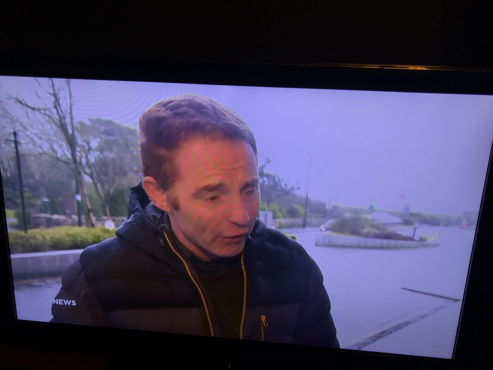
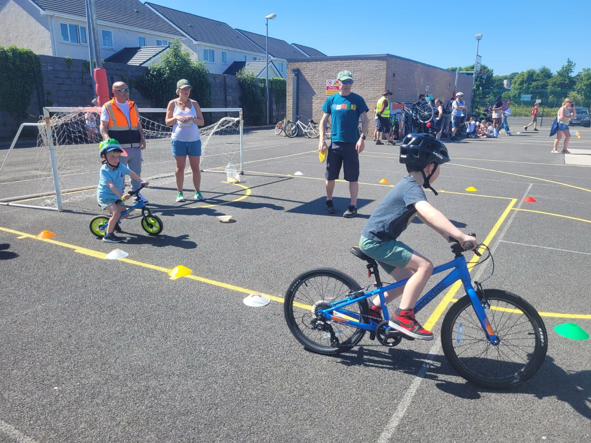
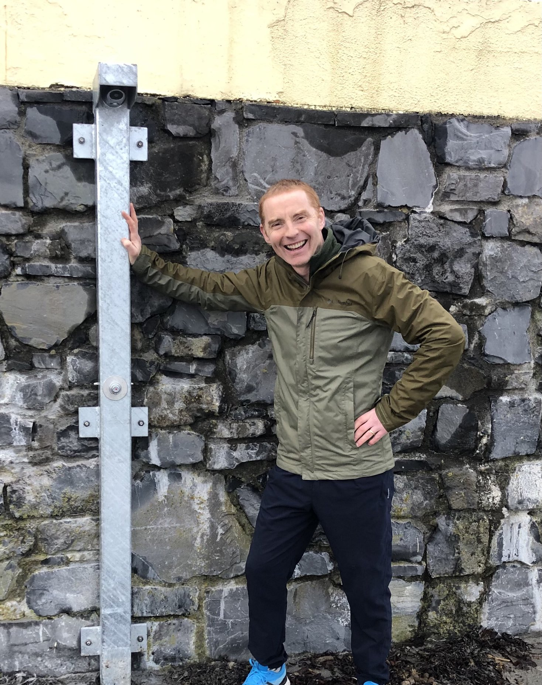
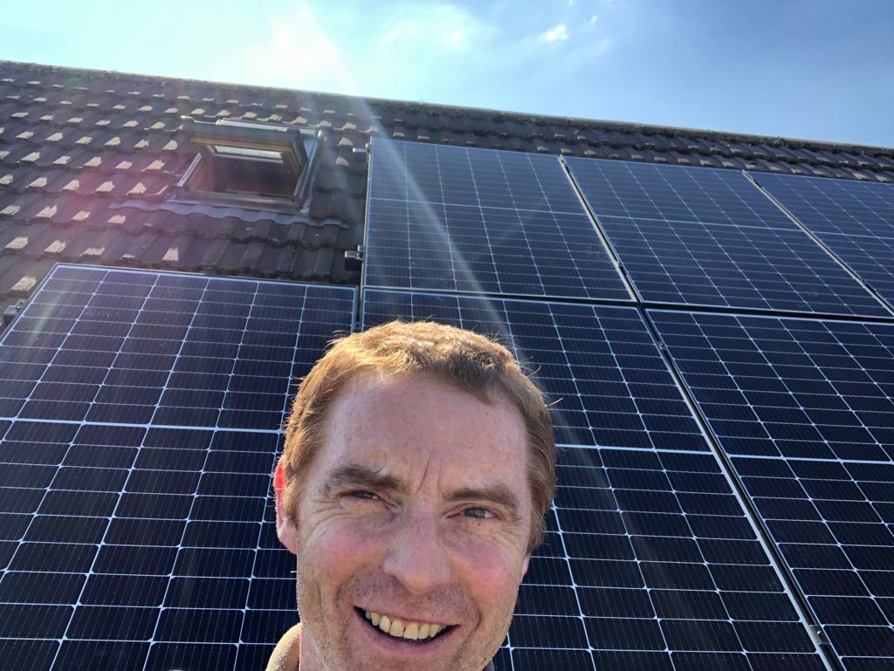

VOTE
NO.1

MURPHY FOR GALWAY WEST
Dear neighbour,
With the Galway West by-election in May, I'll soon be asking for your No. 1 vote.
In the meantime, here's a snapshot of some of the work I've undertaken for the good of Galway and our community...
Niall Murphy
With the Galway West by-election in May, I'll soon be asking for your No. 1 vote.
In the meantime, here's a snapshot of some of the work I've undertaken for the good of Galway and our community...
Niall Murphy
WORKING HARD TO IMPROVE
OUR COMMUNITY!
OUR COMMUNITY!

I WILL CAMPAIGN FOR CLEAN WATER IN GALWAY BAY.

I SERVED AS A BOARD MEMBER OF LEISURELAND.

I'LL SUPPORT TREE-PLANTING AND REWILDING.
I HELPED TEACH KIDS BIKE SKILLS AND I'LL MAKE THE ROADS SAFE FOR THEM.

I'LL CONTINUE TO IMPROVE GALWAY'S PROM AND CATHAN PARK.

GALWAY DESERVES FACILITIES THAT SUPPORT A HEALTHY, ACTIVE LIFE.

AFTER YEARS COACHING IN SALTHILL KNOCKNACARRA, I'LL WORK FOR MORE SPORTS FACILITIES FOR GALWAY.

YEARS OF RACING AND EVENT ORGANISATION WITH THE GALWAY CITY HARRIERS.
EVENT DIRECTOR FOR THE WESTERN LAKES AND ATLANTAQUUA CHALLENGE.



STANDING IN SOLIDARITY WITH THE PEOPLE OF PALESTINE, MARCHING FOR CLIMATE ACTION WITH THE GREEN PARTY, WEARING OF AN INFURIATING STORM ON VIRGIN MEDIA.
SOMETIMES WE HAVE TO PROTEST! IN THE MEDIA AND ON THE STREETS, I'LL STAND UP FOR WHAT'S RIGHT ON HUMAN RIGHTS, HOUSING AND CLIMATE!

GALWAY FACES STORMS, FLOODS AND HIGH PRICES, ALL SIDE EFFECTS OF THE CLIMATE CRISIS! WE HAVE A PROBLEM...

AND WE HAVE THE SOLUTIONS! WE JUST NEED THE POLITICAL WILL!